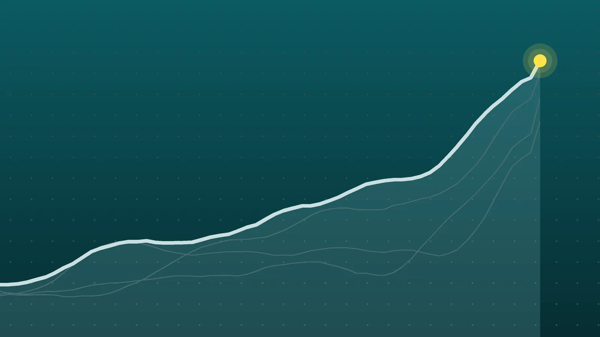

WorldExplainer
Trump and Zelenskyy: Rift Deepens as Oslo Peace Talks Open
A sanctions waiver, a diesel deal, slow Patriot deliveries and satellite slowdowns have pushed ties between Washington and Kyiv to a new low.

Quick take
- Trump told reporters on Oct. 19 that it’s time for somebody else to negotiate on Ukraine’s behalf.
- Zelenskyy met U.S. envoy Steve Witkoff in Oslo on Oct. 20, hosted by Norway’s prime minister and Finland’s president.
- Zelenskyy says Ukraine has almost no U.S.-made Patriot interceptors left and that deliveries paid for by allies are delayed.
- Rubio says intelligence sharing has not paused and that air defense delays were not deliberate.
Why it's trending On Oct. 19 Trump said it was time for someone else to negotiate for Ukraine, a day before Zelenskyy met U.S. envoy Steve Witkoff in Oslo.
What happened
The split between President Donald Trump and Ukrainian President Volodymyr Zelenskyy widened this week, just as a new round of peace talks got underway in Norway. Asked on Monday, Oct. 19, whether the war with Russia could be negotiated without Zelenskyy, Trump said, “I think it’s time for somebody else to negotiate on behalf of Ukraine,” the Associated Press reports.
A day later, Zelenskyy sat down in Oslo with Trump’s special envoy, Steve Witkoff. Norwegian Prime Minister Jonas Gahr Store and Finnish President Alexander Stubb hosted, and Jared Kushner was expected to join remotely because of illness, according to The Kyiv Independent. No results had been announced by Tuesday evening.
The AP described the relationship between Washington and Kyiv as heading toward a possible breaking point.
Why the Trump-Zelenskyy relationship soured
The rift didn’t start with one remark. It built over about two weeks, as several U.S. decisions landed on Kyiv at once:
| Date | What happened |
|---|---|
| Early October | Trump called for Zelenskyy to be replaced and called him a “warmonger” over Ukrainian strikes on Russian oil refineries, Al Jazeera reports |
| Oct. 9 | Trump announced a deal for Russia to supply diesel to world markets, aimed at easing fuel prices |
| Oct. 16 | Trump waived new Russia sanctions passed by Congress (our explainer on the Graham Act waiver) |
| Oct. 18 | Trump posted that Zelenskyy doesn’t want to end the war |
| Oct. 19 | Trump said someone else should negotiate for Ukraine; Zelenskyy briefed U.S. senators |
| Oct. 20 | Zelenskyy met Witkoff in Oslo |
The common thread is fuel prices. Diesel and gasoline costs have climbed since the U.S. and Israel went to war with Iran in February, and the diesel deal and the sanctions waiver both ease pressure on Russian energy. Trump says he wants to keep Moscow at the negotiating table. Zelenskyy called the waiver a “reward” for Russian President Vladimir Putin, Al Jazeera reports.
The three complaints from Kyiv
Air defense. In a briefing with U.S. lawmakers, Zelenskyy said Ukraine has “almost no Patriot interceptors left from the United States.” He says the Pentagon is holding up missiles that European partners already paid for through PURL, a program in which allies fund U.S. weapons for Ukraine. Citing The Washington Post, Straight Arrow News reports that Defense Secretary Pete Hegseth has neither approved nor rejected those transfers. Several European countries are ready to send interceptors from their own stocks but need U.S. sign-off, because the missiles are American-made.
Warnings. Zelenskyy said that three times in the past week, Ukraine didn’t get the usual advance warning of Russian attacks from its partners.
Satellites. Ukraine’s drones and communications rely on Starshield, the military version of SpaceX’s Starlink. Zelenskyy says speed limits now leave his drones unable to catch Russia’s jet-powered drones. Nobody has claimed responsibility. Elon Musk says the U.S. military decides any limits, and Trump said he didn’t order them.
What Washington says
Secretary of State Marco Rubio says intelligence sharing has not paused, and on Tuesday he said delays in air defense shipments were not deliberate, while acknowledging there may be some, according to The Kyiv Independent. He has also said the Pentagon controls Starshield and that Ukraine is seeking to use it for strikes outside its own territory.
In Congress, the reaction crosses party lines. Rep. Brian Fitzpatrick, R-Pa., wants hearings on the Starshield slowdowns. Sen. Roger Wicker, R-Miss., who chairs the Armed Services Committee, urged Trump to accept an offer from Zelenskyy: Ukraine stops hitting Russian energy sites, and the U.S. helps it target Russian missiles. Wicker argued that could also bring down gas prices, the AP reports.
What happens next
- Oslo results. Zelenskyy said the talks would cover strengthening air defense and joint production. He planned a one-on-one with Witkoff, a meeting with the Nordic hosts and joint talks. Officials from the U.K., Germany, France, Poland, the EU and NATO were also reported to be in Oslo.
- Witkoff in Moscow. The envoy is reportedly expected to meet Putin, with the release of a 72-year-old American, Stephen Hubbard, held by Russia since 2022, as the main topic.
- A possible summit. Trump says he is open to a meeting with Putin and Chinese leader Xi Jinping focused on nuclear weapons. Nothing has been scheduled.
- The Patriot decision. Whether Hegseth approves the allied transfers will shape how well Ukraine can defend its power grid as winter nears.
The midterm elections are about two weeks away, and the AP notes that lawmakers from both parties are likely to push back on any U.S.-Russia-China deal over Ukraine.
Quick answers
Is the U.S. still sharing intelligence with Ukraine?
Trump and Rubio say yes. Zelenskyy says Ukraine missed several attack warnings in the past week, and Rubio has blamed warning failures on software issues, according to Straight Arrow News.
Who is negotiating for Ukraine in Oslo?
Zelenskyy himself. He asked Norway and Finland to organize the meeting, Store said.
What is PURL?
The Prioritized Ukraine Requirements List is an arrangement in which European partners pay for U.S.-made weapons, such as Patriot interceptors, to be sent to Ukraine.
Sources
- Associated Press (via ABC News) US ties with Ukraine hit new low as Trump slights Zelenskyy and eases up on RussiaOct. 19, 2026
- Al Jazeera US-Ukraine relations sour as Trump, Zelenskyy clash over talks, armsOct. 20, 2026
- Al Jazeera Zelenskyy to hold talks on Russia-Ukraine war with Witkoff, EuropeansOct. 20, 2026
- The Kyiv Independent Zelensky meets Trump envoy Witkoff in Norway as US-Ukraine ties sourOct. 20, 2026
- Straight Arrow News Ukraine awaits Patriot missiles as Trump-Zelenskyy rift widensOct. 20, 2026
Keep reading

Russia Sanctions: Trump Waives Graham Act Penalties Before Start
Trump waived Russia sanctions and tariffs in the Graham Act days before they began. What the law did, why the White House blocked it and who is objecting.

Pope Leo Returns to St. Peter’s 8 Days After Lung Cancer Surgery
Pope Leo XIV held his first general audience on Oct. 21 since lung cancer surgery. What doctors have said, how he looked, and what it means for his November trip.

Alberta Referendum Results: About 76% Vote to Stay in Canada
Alberta referendum results: about 76% voted to stay in Canada, early counts show. What the result means, who said what, and what comes next.